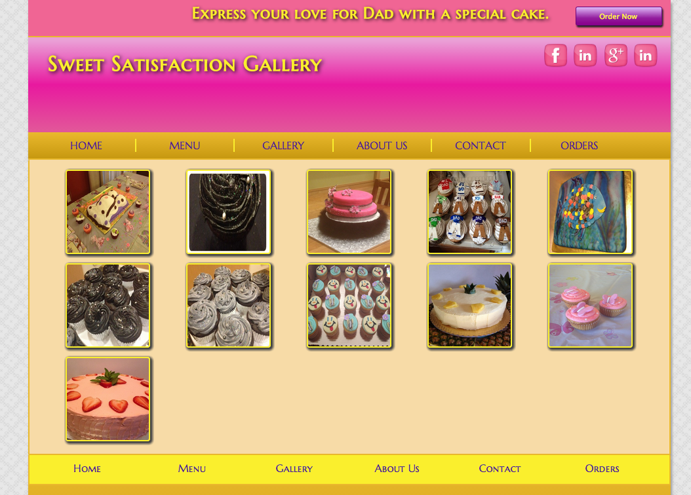

jQuery Tutorial
BlueImp Gallery
Instructor:
Charles Evelyn
Instructor Greeting
Topic: jQuery-Image-Gallery Demo
What is the blueimp jQuery-Image-Gallery
jQuery Image Gallery is an extension to the Dialog component of jQuery UI, to ease navigation between a set of gallery images. It features mouse and keyboard navigation, transition effects, fullscreen mode and slideshow functionality.
jQuery-Image-GalleryFeatures
- jQuery
- Use of jQuery UI Widgets
- Google CDN (Content Delivery Network)
Project
Client Approval
Upon client approval I redesigned their current site (development stage).
Image Gallery
Current State

Image Gallery
Development State
Presentation Scope
Modify the image gallery with blueimp jQuery-Image-Gallery in order to present the visitor with a richer user experience.
Gallery code block
HTML
<div id="links">
<a href="images/babyshower.jpg" title="Baby Shower" data-dialog>
<img src="images/babyshower.jpg" alt="Baby Shower"> </a>
<a href="images/blackcupcake.png" title="Black Pearl" data-dialog>
<img src="images/blackcupcake.png" alt="Black Pearl">
</a>
<a href="images/bowsandfur.jpg" title="Flowers and Fur" data-dialog>
<img src="images/bowsandfur.jpg" alt="Flowers and Fur">
</a>
<a href="images/daddycupcakes.jpg" title="Father's Day" data-dialog>
<img src="images/daddycupcakes.jpg" alt="Father's Day">
</a>
<a href="images/fishyfishy.jpg" title="Fishy-Fishy" data-dialog>
<img src="images/fishyfishy.jpg" alt="Fishy-Fishy">
</a>
<a href="images/grayandblack.jpg" title="Gray and Black Cupcakes" data-dialog>
<img src="images/grayandblack.jpg" alt="Gray and Black Cupcakes">
</a>
<a href="images/grayandblackparty.jpg" title="Gray and Black Party" data-dialog>
<img src="images/grayandblackparty.jpg" alt="Gray and Black Party">
</a>
<a href="images/happycakes.jpg" title="Smiley Face Cupcakes" data-dialog>
<img src="images/happycakes.jpg" alt="Smiley Face Cupcakes">
</a>
<a href="images/pineapplesandcream.jpg" title="Pineapples and Cream" data-dialog>
<img src="images/pineapplesandcream.jpg" alt="Pineapples and Cream">
</a>
<a href="images/pinkbutterfly.jpg" title="Pink Butterfly" data-dialog>
<img src="images/pinkbutterfly.jpg" alt="Pink Butterfly">
</a>
<a href="images/strawberriesandcream.jpg" title="Strawberries and Cream" data-dialog>
<img src="images/strawberriesandcream.jpg" alt="Strawberries and Cream">
</a>
</div> <!-- End of links -->
<!-- Begin dialog widget -->
<div id="blueimp-gallery-dialog" data-show="fade" data-hide="fade">
<!-- Begin gallery widget -->
<div class="blueimp-gallery blueimp-gallery-carousel blueimp-gallery-controls">
<div class="slides"></div>
<a class="prev">‹</a>
<a class="next">›</a>
<a class="play-pause"></a>
</div> <!-- End of blueimp-gallery-controls -->>
</div> <!-- End of blueimp-gallery-dialog -->
Link to JS Scripts (header)
<script type="text/javascript" src="js/jquery-1.11.1.min.js"></script>
<script type="text/javascript" src="js/jquery-ui-1.10.4.custom.js"></script>
<link rel="stylesheet" href="http://ajax.googleapis.com/ajax/libs/jqueryui/1.10.3/themes/south-street/jquery-ui.css" id="theme">
<!-- Modernizr Script Follows-->
<script src="includes/modernizr.js"></script>
<link rel="stylesheet" type="text/css" href="css/cakeCravings.css"/>
<link rel="stylesheet" href="http://blueimp.github.io/Gallery/css/blueimp-gallery.min.css">
Links to CDNs (body)
<script src="//ajax.googleapis.com/ajax/libs/jquery/1.10.2/jquery.min.js"></script>
<script src="//ajax.googleapis.com/ajax/libs/jqueryui/1.10.3/jquery-ui.min.js"></script>
<script src="http://blueimp.github.io/Gallery/js/jquery.blueimp-gallery.min.js"></script>
<script src="js/jquery.image-gallery.min.js"></script>
blueimp script file
/* jQuery Image Gallery plugin 3.0.0
https://github.com/blueimp/jQuery-Image-Gallery
Copyright 2013, Sebastian Tschan
https://blueimp.net
Licensed under the MIT license:
http://www.opensource.org/licenses/MIT
jslint unparam: true global define, window, document
*/
(function (factory) {
'use strict';
if (typeof define === 'function' && define.amd)
{ define([
'jquery',
'./blueimp-gallery'
], factory);
} else {
factory(
window.jQuery,
window.blueimp.Gallery
);
}
}
(function ($, Gallery) {
'use strict';
/*Global click handler to open links with data-dialog attribute
in the Gallery lightbox:
*/
$(document).on('click', '[data-dialog]', function (event) {
// Get the widget id from the data-dialog attribute:
var id = $(this).data('dialog'),
widget = $(id),
dialogWidget = (widget.length && widget) || $('#blueimp-gallery-dialog'),
galleryWidget = dialogWidget.find('.blueimp-gallery'),
dialogInitialized = false,
// Initialize the dialog with custom options
// from data-attributes on the dialog widget:
dialogOptions = $.extend({
modal: true,
width: 'auto'
},
dialogWidget.data()),
galleryOptions = $.extend({
toggleControlsOnReturn: true,
toggleSlideshowOnSpace: true,
enableKeyboardNavigation: true,
startSlideshow: false
},
// Initialize the Gallery with custom options
// from data-attributes on the Gallery widget:
galleryWidget.data(),
{container: galleryWidget[0],
index: this,
event: event,
carousel: true,
onslide: function (index, slide) {
var gallery = this,
title = slide.firstChild.title;
if (dialogInitialized) {
dialogWidget.dialog('option', 'title', title);
} else {
dialogOptions.title = title;
dialogWidget.data('gallery', this) .one('dialogclose', function () {
$(this).dialog('destroy');
gallery.handleClose();
})
.one('dialogresize', function () {
galleryWidget.css('width', 'auto');
})
.dialog(dialogOptions)
.css({
visibility: 'visible',
height: 'auto',
overflow: 'visible'
});
dialogInitialized = true;
}
dialogWidget.trigger('slide', arguments);
},
onslideend: function () {
dialogWidget.trigger('slideend', arguments);
},
onslidecomplete: function () {
dialogWidget.trigger('slidecomplete', arguments);
}
}),
// Select all links with the same data-dialog attribute:
links = $('[data-dialog="' + id + '"]'),
setGalleryWidgetDimensions = function () {
var width = $(window).width() - (dialogOptions.offsetWidth || 100),
height = $(window).height() - (dialogOptions.offsetHeight || 150),
// blueimp gallery carousel ratio (16/9)
// to viewport ratio:
ratio = ((16 / 9) / (width / height));
if (ratio < 1) {
width = width * ratio;
}
galleryWidget.css('width', width);
};
if (galleryOptions.filter) {
links = links.filter(galleryOptions.filter);
}
// The Gallery only renders if the parent element is displayed,
// so we cannot use "display:none", but the following workaround:
dialogWidget.css({
visibility: 'hidden',
height: 0,
overflow: 'hidden'
});
setGalleryWidgetDimensions();
return new Gallery(links, galleryOptions);
});